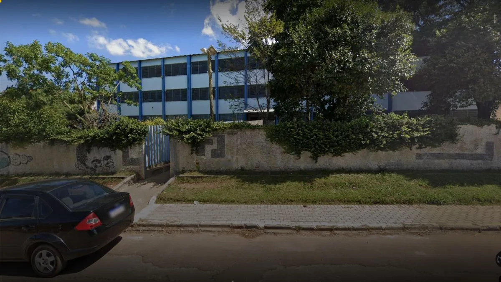

.png)
Está localizado na R. Budaste,8- Rio Verde, Colombo. Aqui os alunos têm recursos para sair do ensino fundamental ao médio. Hoje em dia, o colégio virou cívico militar com um ensino cada vez melhor. O colégio é dividido em dois turnos: manhã e tarde e tem horários de funcionamentos das 07:00 às 18:15. Manhã: 9º ano do Ensino Fundamental II, 1º, 2º e 3º ano do Novo Ensino Médio. Tarde: 6º, 7º e 8º ano do Ensino Fundamental II.
O colégio estadual Alfredo Chaves foi fundado em 1975 e, em agosto de 1976, foi inaugurado. Vale a pena destacar que o nome Alfredo Chaves foi dado em homenagem ao Dr. Alfredo Chaves. O Alfredo Chaves foi um importante político e jornalista brasileiro. No século XIX, ele desempenhou um papel significativo na luta pela abolição e já foi chamado de colônia Alfredo Chaves.
Imagem retirada do livro de registro do colégio.
Vitória: aluna, estudante do 2º ano de exatas.
Maju: aluna, estudante do 2º ano de exatas.
Gabriel: aluno, estudante do 2º ano de exatas.
Eu: aluno, estudante do 2º ano de exatas.
O Colégio Alfredo Chaves possui 3 quadras, 2 de futebol e 1 de vôlei. Possui uma parte com uma sala voltada ao ambiente e tudo mais.